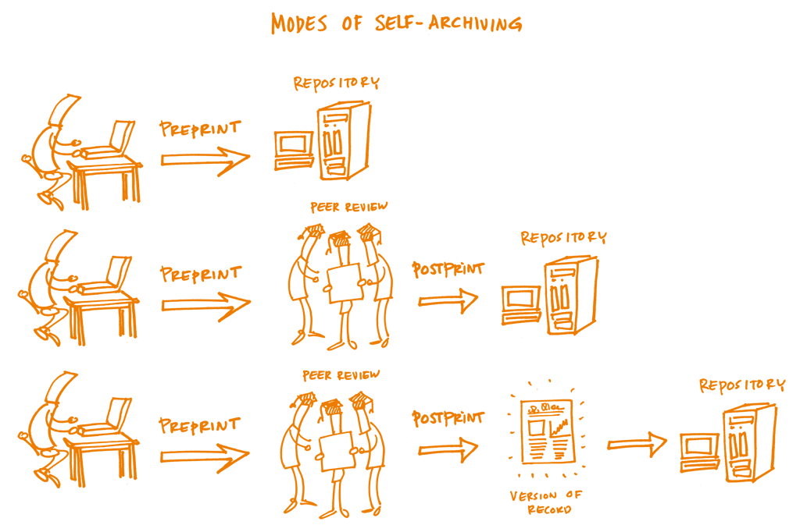
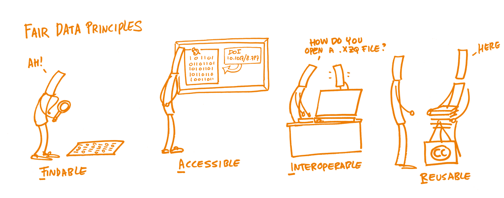
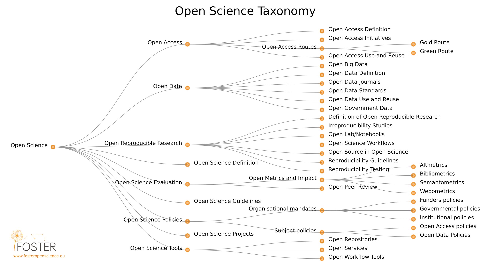
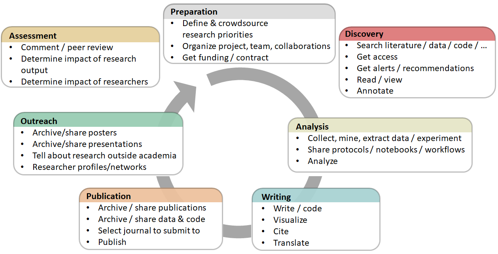

Open Access to publications means that research publications like articles and books can be accessed online, free of charge by any user, with no technical obstacles (such as mandatory registration or login to specific platforms). At the very least, such publications can be read online, downloaded and printed. Ideally, additional rights such as the right to copy, distribute, search, link, crawl and mine should also be provided. Open Access can be realised through two main non-exclusive routes:
Green Open Access (self-archiving): The published work or the final peer-reviewed manuscript that has been accepted for publication is made freely and openly accessible by the author, or a representative, in an online repository. Some publishers request that Open Access be granted only after an embargo period has elapsed. This embargo period can last anywhere between several months and several years. For publications that have been deposited in a repository but are under embargo, usually at least the metadata are openly accessible.
Gold Open Access (Open Access publishing): The published work is made available in Open Access mode by the publisher immediately upon publication. The most common business model is based on one-off payments by authors (commonly called APCs – article processing charges – or BPCs – book processing charges). Where Open Access content is combined with content that requires a subscription or purchase, in particular in the context of journals, conference proceedings and edited volumes, this is called hybrid Open Access.
Rationale
One of the most common ways to disseminate research results is by writing a manuscript and publishing it in a journal, conference proceedings or book. For many years those publications were available to the public under a payment by means of a subscription fee or individually. However, at the turn of the 21st century a new movement appeared with a clear objective: make all the research results available to the public without any restriction. This movement took the name of Open Access and established two initial strategies to achieve its final goal. The first strategy was to provide tools and assistance to scholars to deposit their refereed journal articles in open electronic repositories. The second one was to launch a new generation of journals using copyright and other tools to ensure permanent open access to all the articles they publish. As a result of the first strategy we see self-archiving practices: researchers depositing and disseminating papers in institutional or subject based repositories. And as a result of the second strategy we have seen the creation of the open access journals that provide free access to readers and allow reuse of their contents without almost any restriction.
Beyond those two strategies established in the Budapest Open Access Initiative in 2002, we have seen the growth of new methods of dissemination. Among them, we find the publication of preprints through institutional repositories and preprint servers. Preprints are widely used in physical sciences and now emerging in life sciences and other fields. Preprints are documents that have not been peer reviewed but are considered as a complete scientific publication in a first stage. Some of the preprints servers include open peer review services and the availability to post new versions of the initial paper once reviewed by peers. Following this trend of including open peer review processes in preprint servers we have seen the development of new publishing platforms supported by funders like the Wellcome Trust or the Bill and Melinda Gates Foundation . Even the European Commission is planning to to launch a publishing platform for the Horizon 2020 funded projects.
The choice of a journal or a publishing platform may affect the availability and accessibility of the research results. There are several options for researchers when deciding where, when, and how to publish their findings. It is fundamental to know all the implications to avoid future problems.
The rise of many business models around open access journals poses a lot of misunderstandings and uncertainties to the researchers when deciding where to publish. Moreover, paywalled journals offer individual open access models, the so-called hybrid model, that brings more complexity when deciding where and how to publish.
Regarding self archiving, researchers are confused by the different requirements established by the publishers in relation with version of a paper that they can deposit in a repository and when this version can be available to the public. This delay in allowing public access to the full text is often called embargo period and it is not uniform for all the journals. Institutions who provide a repository for its researchers should facilitate self archiving practices by digesting all those publisher requirements.
Learning objectives
Learn about the different options a researcher has when deciding where to publish a paper, including funder requirements.
Be able to decide if a paper can be published before peer review, for example in a preprint server. Trainees will learn how to determine which options they have according to their disciplines/journal policies, and if there would be consequences afterwards that might jeopardize final publication in a peer-reviewed journal.
Trainees will learn how to discover the differences between policies of peer-reviewed journals, particularly when submitting something available as a preprint. They will learn the differences among open-access journals, such as which require a fee for submission/publication and which licenses they use.
Trainees will learn about the implications of publishing in paywalled journals for future self-archiving in a repository, and the publisher requirements in terms of version and embargo. Trainees will also learn about hybrid open-access journals.
(optional depending on audience) Trainees will learn about open-access opportunities when publishing in books, since this is the main avenue of dissemination for some disciplines.
Trainees will learn about different business models used by open-access journals, and opportunities for obtaining funds to support publishing if needed.
Key components
Knowledge
Repositories and self-archiving
At the beginning of 2018 more than 4600 repositories are available for researchers to self-archive their publications according to the Registry of Open Access Repositories. In this list we can find institutional repositories, subject based or thematic repositories and harvesters. The first ones are generally managed by research performing institutions to provide to their community a place to archive and share openly papers and other research outputs. Subject based repositories are usually managed by research communities and most of the contents are related to a certain discipline. Finally, harvesters aggregate content from different repositories becoming sites to perform general searches and build other value-added services. It is fundamental for a repository to be harvested to acquire more visibility. For that purpose, repository managers need to follow standard guidelines regarding the use of metadata and the values of these metadata. Moreover, institutional repositories can be linked with other information databases to increase discoverability, for example PubMed offers the possibility to link its registers by the linkout project. Repositories have always been seen as an alternative way to access to scientific publications when accessing to the original source is not affordable. Currently there are tools like the Unpaywall browser extension that facilitates this alternative.
When choosing a journal to publish research results, researchers should take a moment to read the journal policy regarding the transfer of copyright. Many journals still require for publication that authors transfer full copyright. This transfer of rights implies that authors must ask for permission to reuse their own work beyond what is allowed by the applicable law and unless there are some uses already granted. Among those granted uses we can find teaching purposes, sharing with colleagues, and especially how researchers can self-archive their papers in repositories. Sometimes there a common policy among all the journals published by the same publishers but in general journals have their own policy, especially when they are published on behalf of a scientific society. When looking at the self-archiving conditions we must identify two key issues: the version of the paper that can be deposited and when it can be publicly available.
Regarding the version, some journals allow the dissemination of the submitted version, also known as preprint, and they allow its replacement for a reviewed version once the final paper has been published. Due to the increase of policies requiring access to research results, most of the journals allow to deposit the accepted version of the paper, also known as the author manuscript or postprint. This version is the final text once the peer review process has ended but it has not the final layout of the publication. Finally some journals allow researchers to deposit the final published version, also known as the version of record.
In relation to the moment to make the paper publicly available, many journals establish a period of time from its original publication: the embargo period, which can range from zero to 60 months. Some journals include or exclude embargoes depending on the versions. For instance the accepted version could be made publicly available after publication but the published version must wait 12 months.

Open Access publishing
The number of Open Access Journals has increased during the last years becoming a real option for researchers when deciding where to publish their findings. According to the Directory of Open Access Journals (DOAJ), currently there are more than 11,000 journals. Nevertheless is important to remark that an open access journal must provide free access to its contents but it also must license them to allow reusability. No legal notice must be legally understood as "all rights reserved". Although the definition of an open access journal does not include any condition about the business model, there is a fact that those journals are commonly known as journal where you have to pay to publish. This misconception is due to the fact that the most successful journals and the ones that got the highest impact follow this model. Nevertheless, a recent study shows that the majority of journals registered in DOAJ do not charge any fee for publication (Data available here).
Currently many paywalled journals offer individual open access options to researchers once the paper is accepted after peer review. Those options include the publication under a free content license and free accessibility to anyone since its first publication. This model is commonly known as the hybrid model because in the same issue of a journal, readers can find open access and paywalled contributions. Usually publishers ask for a fee to open individual contributions. Recent studies show that the hybrid fees are higher than the average of the article processing charges in some pure open access journals (Jahn & Tullney 2016). One of the reasons researchers choose the hybrid model is to fulfil some of the requirements of funders policy, especially the ones requiring immediate public access to research results or short embargo periods.
Some funders, have decided to establish their own publishing platforms to provide their grantees with a place to release their findings. In general, to publish in those platforms costs around 1000 € and all the materials are released under a CC BY license. The publication is not limited to papers, researchers can include, for instance, data and software. There is no previous peer review process and therefore researchers publish documents that only pass through a limited editorial review to check the format but there is not an evaluation on the content. Peer review is done in a transparent way allowing anyone to see who wrote it and what the comments were. After the open peer review, authors can upload updated versions of their papers accordingly.
Some disciplines prefer to use other formats than journals to publish results, for instance books. Initially, publishers were very reluctant to allow researchers to self archive a full book or even a book chapter. However, some publishers have begun to adopt policies to facilitate it. On the other hand, some university presses have shifted their publication model to open access to increase the visibility of their contents, especially monographs. This change can be explained as an answer to the cuts in some of the expenditures in monographs due to the restrictions in library budgets. A common model for this open access university presses is to provide a free version in PDF and sell paper or epub versions (see for instance UCL). Moreover the creation of the Directory of Open Access Books have increased their discoverability. In a similar way than other journal initiatives, there have appeared some projects to join forces to establish a common fund to build open access monographs, for instance Knowledge Unlatched.
Skills
Choose a suitable repository or server to post a preprint according to your discipline
Self archive a publication in a suitable repository, institutional or subject-based, following the possible restrictions posed by the publisher, mainly related to the allowed version to be deposit and the embargo period
Choose among the options of open-access journals and publishing platforms available
Find available funds or discounts to publish in open-access journals if needed
Questions, obstacles, and common misconceptions
Q: "If I publish my work as a preprint, it won’t be acknowledged - I will only receive credit for a peer-reviewed journal article."
A: Many funders are acknowledging the growing presence of preprint publishing in their policies: Howard Hughes Medical Institute (HHMI), Wellcome Trust, the Medical Research Council (UK) and the National Institutes of Health (NIH) announced policies allowing researchers to cite their own preprints in grant applications and reports (Luther 2017). In addition, preprints help establish priority of results and may increase the impact - and citation count - of a later peer-reviewed article (McKiernan 2016).
There are still some researchers reluctant to deposit other versions than the final published version. It is important to inform them about the copyright implications when they sign a transfer document.
Avoid the misconception of understanding an open-access journal as a journal where authors must pay to publish. The author-pay model is just one of the existing business models for an open-access journal. You might show data about the number of journals that do not ask for a publication fee (for example, as of 31 January 2018, DOAJ reports that 71% of the 11,001 open-access journals listed require no publishing charge). You may want to show other business models like the SCOAP3 Initiative, the LingOA project, or the Open Library of Humanities.
The use of publishing platforms has implications for research evaluation, the peer-review process, and the role of publishers. There are still many research assessments based on journal metrics and therefore this new way of publishing challenges those evaluations. Moreover the fact that peer review is completely transparent allows readers to identify reviewers and track the versioning of the paper. Finally, if those platforms become the common tool to publish results, publishers would need to redefine their role in the scholarly communication process.
The hybrid model is very controversial and it could raise a lot of questions about the costs, possible double-dipping, and the use (or lack) of licensing.
You may discuss the future of the scholarly communication by presenting some of the offsetting models or transition projects like OA2020 global alliance proposed by the Max Planck Society.
Learning outcomes
Trainees will be able to choose where to publish their research paper, describing the implications and consequences of this choice.
Trainees will be able to determine the self-archiving policy of a journal where they want to publish based on the information available at the corresponding website or at any of the portals that provide general information as Sherpa/Romeo, Dulcinea, and Heloïse.
Trainees who want to establish a new open-access journal will be able to describe their own self-archiving policy, license, and business model.
Trainees who manage repositories will be able to describe the tools and services that allow researchers to self-archive.
Piwowar H, Priem J, Larivière V, Alperin JP, Matthias L, Norlander B, Farley A, West J, Haustein S. (2018) The state of OA: a large-scale analysis of the prevalence and impact of Open Access articles. PeerJ 6:e4375 https://doi.org/10.7717/peerj.4375
Reproducibility means that research data and code are made available so that others are able to reach the same results as are claimed in scientific outputs. Closely related is the concept of replicability, the act of repeating a scientific methodology to reach similar conclusions. These concepts are core elements of empirical research.
Improving reproducibility leads to increased rigour and quality of scientific outputs, and thus to greater trust in science. There has been a growing need and willingness to expose research workflows from initiation of a project and data collection right through to the interpretation and reporting of results. These developments have come with their own sets of challenges, including designing integrated research workflows that can be adopted by collaborators while maintaining high standards of integrity.
The concept of reproducibility is directly applied to the scientific method, the cornerstone of Science, and particularly to the following five steps:
Formulating a hypothesis
Designing the study
Running the study and collecting the data
Analyzing the data
Reporting the study
Each of these steps should be clearly reported by providing clear and open documentation, and thus making the study transparent and reproducible.
Rationale
Overarching factors can further contribute to the causes of non-reproducibility, but can also drive the implementation of specific measures to address these causes. The culture and environment in which research takes place is an important ‘top-down’ overarching factor. From a ‘bottom-up’ perspective, continuing education and training for researchers can raise awareness and disseminate good practice.
While understanding the full range of factors that contribute to reproducibility is important, it can also be hard to break down these factors into steps that can immediately be adopted into an existing research program and immediately improve its reproducibility. One of the first steps to take is to assess the current state of affairs, and to track improvement as steps are taken to increase reproducibility even more. Some of the common issues with research reproducibility are shown in the figure below.
Source: Symposium report, October 2015. Reproducibility and reliability of biomedical research: improving research practice PDF.
Goodman, Fanelli, & Ioannidis (2016) note that in epidemiology, computational biology, economics, and clinical trials, reproducibility is often defined as:
"the ability of a researcher to duplicate the results of a prior study using the same materials as were used by the original investigator. That is, a second researcher might use the same raw data to build the same analysis files and implement the same statistical analysis in an attempt to yield the same results."
This is distinct from replicability: "which refers to the ability of a researcher to duplicate the results of a prior study if the same procedures are followed but new data are collected." A simpler way of thinking about this might be that reproducibility is methods-oriented, whereas replicability is results-oriented.
Reproducibility can be assessed at several different levels: at the level of an individual project (e.g., a paper, an experiment, a method or a dataset), an individual researcher, a lab or research group, an institution, or even a research field. Slightly different kinds of criteria and points of assessment might apply to these different levels. For example, an institution upholds reproducibility practices if it institutes policies that reward researchers who conduct reproducible research. On the other hand, a research field might be considered to have a higher level of reproducibility if it develops community-maintained resources that promote and enable reproducible research practices, such as data repositories, or common data-sharing standards.
Learning objectives
There are three major objectives that need to be addressed here:
Understand the important impact of creating reproducible research.
Understand the overall setup of reproducible research (including workflow design, data management and dynamic reporting).
Be aware of the individual steps in the reproducibility process, as well as the corresponding resources that can be employed.
Knowledge
The following is an indicative list of take-away points on reproducibility:
What is the ‘reproducibility crisis’, and meta-analyses of reproducibility.
Principles of reproducibility, and integrity and ethics in research.
What are the computing options and environments that allow collaborative and reproducible set up.
Factors that affect reproducibility of research.
Data analysis documentation and open research workflows.
There are several practical tips for reproducibility that one should have in mind when setting out the particular skills necessary to ensure this. Best practices in reproducibility borrow from Open Science practices more generally but their integration offers benefits to the individual researcher themselves, whether they choose to share their research or not. The reason that integrating reproducibility best practices benefits the individual researcher is that they improve the planning, organization, and documentation of research. Below we outline one example of implementing reproducibility into a research workflow with references to these practices in the handbook.
1. Plan for reproducibility before you start
Create a study plan or protocol.
Begin documentation at study inception by writing a study plan or protocol that includes your proposed study design and methods. Use a reporting guideline from the Equator Network if applicable. Track changes to your study plan or protocol using version control (reference to Version Control). Calculate the power or sample size needed and report this calculation in your protocol as underpowered studies are prone to irreproducibility.
Choose reproducible tools and materials
Select antibodies that work using an antibody search engine like CiteAb. Avoid irreproducibility through misidentified cell lines by choosing ones that are authenticated by the International Cell Line Authentication Committee. Whenever possible, choose software and hardware tools where you retain ownership of your research and can migrate your research out of the platform for reuse (see Open Research Software and Open Source).
Set-up a reproducible project
Centralize and organize your project management using an online platform, a central repository, or folder for all research files. You could use GitHub as a place to store project files together or manage everything using a electronic lab notebook such as Benchling, Labguru,or SciNote. Within your centralized project, follow best practices by separating your data from your code into different folders. Make your raw data read-only and keep separate from processed data (reference to Data Management).
When saving and backing up your research files, choose formats and informative file names that allow for reuse. File names should be both machine and human readable (reference to Data Management). In your analysis and software code, use relative paths. Avoid proprietary file formats and use open file formats (see 6 Open Licensing and File Formats).
2. Keep track of things
Registration
Preregister important study design and analysis information to increase transparency and counter publication bias of negative results. Free tools to help you make your first registration include AsPredicted, Open Science Framework, and Registered Reports. Clinical trials should use Clinicaltrials.gov.
Version control
Track changes to your files, especially your analysis code, using version control (see Open Research Software and Open Source).
Documentation
Document everything done by hand in a README file. Create a data dictionary (also known as a codebook) to describe important information about your data. For an easy introduction, use: Karl Broman’s Data Organization module and refer to Data Management.
Literate programming
Consider using Jupyter Notebooks, KnitR, Sweave, or other approaches to literate programming to integrate your code with your narrative and documentation.
3. Share and license your research
Data
Avoid supplementary files, decide on an acceptable permissive license, and share your data using a repository. Follow best practices as outlined in the Open Research Data and Materials chapter.
License your code to inform about how it may be (re)used. Share notebooks with services such as mybinder that allow for public viewing and execution of the entire notebook on shared resources. Share containers or notebooks with services such as Rocker or Code Ocean. Follow best practices outlined in Open Research Software and Open Source.
4. Report your research transparently
Report and publish your methods and interventions explicitly and transparently and fully to allow for replication. Guidelines from the Equator Network, tools like Protocols.io, or processes like Registered Reports can help you report reproducibly. Remember to post your results to your public registration platform (such as ClinicalTrials.gov or the SocialScienceRegistry) within a year of finishing your study no matter the nature or direction of your results.
Questions, obstacles, and common misconceptions
Q: "Everything is in the paper; anyone can reproduce this from there!"
A: This is one of the most common misconceptions. Even having an extremely detailed description of the methods and workflows employed to reach the final result will not be sufficient in most cases to reproduce it. This can be due to several aspects, including different computational environments, differences in the software versions, implicit biases that were not clearly stated, etc.
Q: "I don’t have the time to learn and establish a reproducible workflow."
A: In addition to a significant number of freely available online services that can be combined and facilitate the setting up of an entire workflow, spending the time and effort to put this together will increase both the scientific validity of the final results as well as minimize the time of re-running or extending it in further studies.
Q: "Terminologies describing reproducibility are challenging."
A: See Barba (2018) for a discussion on terminology describing reproducibility and replicability.
Learning outcomes
Understand the necessity of reproducible research and its reasoning.
Be able to establish a reproducible workflow within the context of an example task.
Know tools that can support reproducible research.
Further reading
Button et al. (2013). Power failure: why small sample size undermines the reliability of neuroscience. doi.org/10.1038/nrn3475
Karl Broman (n.y.). Data Organization. Choose good names for things. kbroman.org
3. Open Research Software and Open Source
What is it?
Open research software, or open-source research software, refers to the use and development of software for analysis, simulation, visualization, etc. where the full source code is available. In addition, according to the Open Source Definition, open-source software must be distributed in source and/or compiled form (with the source code available in the latter case), and must be shared under a license that allows modification, derivation, and redistribution.
Rationale
Modern research relies on software, and building upon—or reproducing—that research requires access to the full source code behind that software (Barnes, 2010; Morin et al., 2012; Ince et al., 2012; Prins et al. 2015; Lowndes et al., 2018). As Buckheit and Donoho put it, paraphrasing Jon Claerbout, ‘‘An article about a computational result is advertising, not scholarship. The actual scholarship is the full software environment, code and data, that produced the result’’ (Buckheit & Donoho, 1995). Open access to the source code of research software also helps improve the impact of the research (Vandewalle, 2012).
Sharing software used for research (whether computational in nature, or that relies on any software-based analysis/interpretation) is a necessary, though not sufficient, condition for reproducibility. This is due to the unavoidable ambiguity that arises when trying to fully describe software using natural language, e.g., in a paper (Ince et al., 2012). Furthermore, many (if not most) software programs may contain some undetected errors (Soergel, 2015), so even a "perfect" written description of software would not be able to account for all results.
Learn the characteristics of open software; understand the ethical, legal, economic, and research-impact arguments for and against open software, and further understand the quality requirements of open code.
Learn how to use existing open software and appropriately attribute (cite) it.
Learn how to use common tools and services for sharing research codes openly.
Be able to choose the appropriate license for their software, and understand the difference between permissive and non-permissive licenses.
Key components
Knowledge
There are several different platforms that support open sharing and collaboration on software, research or otherwise. First of all, you can use this checklist to evaluate openness of existing research software:
Is the software available to download and install?
Can the software easily be installed on different platforms?
Does the software have conditions on the use?
Is the source code available for inspection?
Is the full history of the source code available for inspection through a publicly available version history?
Are the dependencies of the software (hardware and software) described properly? Do these dependencies require only a reasonably minimal amount of effort to obtain and use?
GitHub is a popular tool that allows version control: management and overall tracking of changes in a particular piece of software. Services such as GitHub, GitLab, Bitbucket, and others provide an interface to the tool as well as remote storage services that can be used to maintain, share, and collaborate on research software. As a tool it is quite widespread and, although it has an initial learning curve, it has proven invaluable to establishing an open and reproducible research workflow.
Having the research software on GitHub is just the first part; it is equally important to have a published and persistent identifier associated with it, such as a DOI. There are several ways of associating a DOI with a GitHub repository; the easiest one is to employ Zenodo (a free, open catch-all repository created by OpenAIRE and CERN) to do the assignment, although other repositories for archiving software and obtaining a DOI do exist, such as Figshare. Zenodo integrates with GitHub to archive the software and provide a DOI when developers make a formal release on GitHub.
Publicly shared software is not actually open source unless accompanied by a suitable license, because by default software (along with any other creative work) falls under exclusive copyright to the creators, meaning no one else can use, copy, distribute, or modify your work (choosealicense.com). (If you truly want to share your code with no restrictions whatsoever, you can dedicate it to the public domain.) Instead, you should choose an appropriate license for your software, based on what you would prefer to let others do (or prevent them from doing) with your code; the choosealicense.org site is a helpful resource to differentiate between licenses, although it does not feature every available or popular open-source license. Once you select a license, put the text—edited to include the author name(s) and year—in the software repository as a plaintext LICENSE file.
Although sharing software in any form is better than not sharing it, your software will have more impact and be more easily used by others—and your future self!—if you include documentation. This can include helpful comments in the code that explain why you did something (rather than what you did, which should be evident), an informative README file that describes what your software does and gives some helpful information (e.g., how to install, how to cite, how to run, important dependencies), tutorials/examples, and/or API documentation (which may be automatically generated from properly formatted comments in the code).
Missing or inaccessible dependencies or insufficient documentation of the computational environment are very common barriers to reuse and reproducibility. One approach to address these barriers is to share your code with your computational environment using container technology. Containers package the code with the dependencies and computational environment so others can more easily run your analysis. Examples of container implementation in research include Rocker, Binder, and Code Ocean.
When you use software — whether you wrote it, or someone else did and made it available — appropriate citation is important for reproducibility (discussed more in Section 4; briefly, the version used can change your results or interpretation) and giving credit to the developers of the software (Niemeyer 2016, Smith 2016). The decision of when to cite software is up to you as the researcher, but we recommend a citation whenever the software did some work integral to your results, interpretation, or conclusions. The best way to make your code easily citable is to use the GitHub–Zenodo integration described before and provide the resulting DOI in an obvious place like the software’s README, perhaps along with a suggested citation format. When citing any software, you should include at minimum the author name(s), software title, version number, and unique identifier/locator (Smith 2016). If you use someone else’s software and they provided a DOI, then you can easily use that to identify and point to the software; if they did not archive their software, then you should include a URL where the software can be found and the version number or (e.g.) commit hash.
Additional, more complicated concepts include automated testing and continuous integration of software, packaging of software in binary formats, and governance and management of multi-person open-source projects (i.e., codes of conduct, contributing guides). Some of these topics are described by Scopatz and Huff (2015).pdf). Wilson et al. (2017) also provide a practical guide to best practices for scientific computing that includes advice specifically on research software development.
Open Source Hardware
The open source principles above extend to hardware. Researchers often use proprietary instrumentation or hardware in their research that is not freely accessible, reusable, or adaptable. Scientific hardware includes everything from sequencing tools and microscopes to specialized testing equipment and particle colliders. Open Science Hardware (OScH) community, for example, is leading a push for the open source movement to include scientific tools, hardware, and research infrastructures through their Global Open Science Hardware Roadmap.
Skills
Create a repository on GitHub, and enable the integration with Zenodo. Mint the first release of the software.
Create documentation for a software package, including README, comments, and examples.
Appropriately cite software used for a paper.
Questions, obstacles, and common misconceptions
Q: "I can’t share my software—it’s too messy / it doesn’t have good documentation / I didn’t leave good comments!"
A: Developers of research software around the world empathize with this feeling—people rarely feel like their code is "ready" to publicly share or that it is “finished”. However, as Barnes (2010) put it, “if your code is good enough to do the job, then it is good enough to release—and releasing it will help your research and your field.” In other words, if you feel comfortable enough with your software to publish a study or report results, then the code is sufficiently developed to share with your colleagues. (In the other direction, if you don’t feel comfortable sharing the code, then perhaps it requires more development or testing before using in a publication). Plus, sharing your code allows others to improve and build upon it, leading to even greater impact and innovation (and citations for you!).
Q: "What if someone takes the code I have shared and uses it for nefarious purposes, or claims they wrote it?"
A: Selecting an appropriate license for your software will help protect you from any uses of your software by others; for example, the common MIT License includes both limitations of liability and states that no warranty is provided. If someone else tries to claim that they wrote the software you made available, then you can point to the timestamps on your repository or archived versions as proof of your prior work.
Q: "If I share my code in an online repository, I will be deluged with requests for user support."
A: Although potential users may ask you for help, either via email or (e.g.) issues filed on the online repository, you are under no obligation to provide support if you prefer not to or cannot do so. An appropriate license even provides you with legal protection for this (e.g., the no-warranty clause of the MIT License).
Common misconception: simply putting code online makes it open-source software. In fact, unless the software is accompanied by a license that grants permission for others to use, copy, modify, and/or distribute, then the developer(s) retain exclusive copyright. A open-source license needs to accompany the code to make it open-source software.
Learning outcomes
Be able to share software under the most appropriate license (i.e., both the tools and the licensing).
Be able to upload, version, and register a piece of code under a persistent identifier.
Be able to cite software used for a research article.
Martinez-Torres and Diaz-Fernandez (2013).Current issues and research trends on open-source software communities PDF
Morin et al. (2012). Shining Light into Black Boxes. PDF
Oishi et al. (2018). Perspectives on Reproducibility and Sustainability of Open-Source Scientific Software from Seven Years of the Dedalus Project. arXiv:1801.08200v1 [astro-ph.IM]
Scacchi (2010). The Future of Research in Free/Open Source Software Development. PDF
Steinmacher et al. (2014). A systematic literature review on the barriers faced by newcomers to open source software projects. PDF
Stodden (2010). The Scientific Method in Practice: Reproducibility in the Computational Sciences.PDF
Vandewalle (2012). Code Sharing Is Associated with Research Impact in Image Processing. PDF
2. Open Research Data and Materials
What is it?
Open research data is data that can be freely accessed, reused, remixed and redistributed, for academic research and teaching purposes and beyond. Ideally, open data have no restrictions on reuse or redistribution, and are appropriately licensed as such. In exceptional cases, e.g. to protect the identity of human subjects, special or limited restrictions of access are set. Openly sharing data exposes it to inspection, forming the basis for research verification and reproducibility, and opens up a pathway to wider collaboration. At most, open data may be subject to the requirement to attribute and sharealike (see the Open Data Handbook).
Rationale
Research data are often the most valuable output of many research projects, they are used as primary sources that underpin scientific research and enable derivation of theoretical or applied findings. In order to make findings/studies replicable, or at least reproducible or reusable (see Reproducible Research And Data Analysis) in any other way, the best practice recommendation for research data is to be as open and FAIR as possible, while accounting for ethical, commercial and privacy constraints with sensitive data or proprietary data.
Learning objectives
Gain an understanding of the basic characteristics and principles of open and FAIR research data, including appropriate packaging and documentation, to enable others to understand, reproduce, and re-use in alternative ways.
Familiarity with the sorts of data that might be considered sensitive, and the restrictions or constraints on openly sharing them.
Be able to convert a ‘closed’ dataset into one which is ‘open’ by implementing the necessary measures in a data management plan, with appropriate data stewardship and metadata.
Be able to use research data management plan and to make your research results findable and accessible, even if it contains sensitive data.
Understand the pros and cons of openly sharing different types of data (e.g., privacy, sensitivity, de-identification, mediated access).
Understand the importance of appropriate metadata for sustainable archiving of research data.
Understand the basic workflows and tools for sharing research data.
Key components
Knowledge & Skills
FAIR principles
In 2014, a core set of principles were drafted in order to optimize the reusability of research data, named the FAIR Data Principles. They represent a community-developed set of guidelines and best practices to ensure that data or any digital object are Findable, Accessible, Interoperable and Re-usable:
Findable: The first thing to be in place to make data reusable is the possibility to find them. It should be easy to find the data and the metadata for both humans and computers. Automatic and reliable discovery of datasets and services depends on machine-readable persistent identifiers (PIDs) and metadata.
Accessible: The (meta)data should be retrievable by their identifier using a standardized and open communications protocol, possibly including authentication and authorisation. Also, metadata should be available even when the data are no longer available.
Interoperable: The data should be able to be combined with and used with other data or tools. The format of the data should therefore be open and interpretable for various tools, including other data records. The concept of interoperability applies both at the data and metadata level. For instance, the (meta)data should use vocabularies that follow FAIR principles.
Re-usable: Ultimately, FAIR aims at optimizing the reuse of data. To achieve this, metadata and data should be well-described so that they can be replicated and/or combined in different settings. Also, the reuse of the (meta)data should be stated with (a) clear and accessible license(s).
Distinct from peer initiatives that focus on the human scholar, the FAIR principles put a specific emphasis on enhancing the ability of machines to automatically find and use data or any digital object, in addition to supporting its reuse by individuals. The FAIR principles are guiding principles, not standards. FAIR describes qualities or behaviours that are required to make data maximally reusable (e.g., description, citation). Those qualities can be achieved by different standards.

Data publishing
Most researchers are more or less familiar with Open Access publishing of research articles and books (see chapter 5). More recently, and for the reasons mentioned above, data publishing has gained increasing attention. More and more funders expect the data produced in research projects they finance to be findable, accessible and as open as possible.
There are several distinct ways to make research data accessible, including (Wikipedia):
Publishing data as supplemental material associated with a research article, typically with the data files hosted by the publisher of the article.
Hosting data on a publicly-available website, with files available for download.
Depositing data in a repository that has been developed to support data publication, e.g., Dataverse, Dryad), figshare, Zenodo.
A large number of general and domain or subject specific data repositories exist which can provide additional support to researchers when depositing their data.
Publishing a data paper about the dataset, which may be published as a preprint, in a journal, or in a data journal that is dedicated to supporting data papers. The data may be hosted by the journal or hosted separately in a data repository. Examples of data journals include Scientific Data (by SpringerNature) and the Data Science Journal (by CODATA). For a comprehensive review of data journals, see Candela et al.
The CESSDA ERIC Expert tour guide on Data Management provides an overview of pros and cons of different data publication routes. Sometimes, your funder or another external party requires you to use a specific repository. If you are free to choose, you may consider the order of preference in the recommendations by OpenAIRE:
Use an external data archive or repository already established for your research domain to preserve the data according to recognised standards in your discipline.
If available, use an institutional research data repository, or your research group’s established data management facilities.
Search for other data repositories in re3data. There is no single filter option in re3data covering the FAIR principles, but considering the following filter options will help you to find FAIR-compatible repositories: access categories, data usage licenses, trustworthy data repositories (with a certificate or explicitly adhering to archival standards) and whether a repository gives the data a persistent identifier (PID). Another aspect to consider is whether the repository supports versioning.
You should consider where to deposit and publish your data already in your research data management plan. CESSDA offers some practical questions, which are recommended to be considered. For example: Which data and associated metadata, documentation and code will be deposited? How long does the data need to be retained? For how long should the data remain reusable? How will the data be made available? What access category will you choose? For more questions check Adapt your DMP: part 6. On the other hand don’t forget to check if a chosen repository meets requirements of your research and of your funder. Some repositories have already gained certification, like CoreTrustSeal, which certifies them to be trustworthy and to be able to meet Core Trustworthy Data Repositories Requirements. It is worth mentioning that some domain specific repositories may accept only high-quality data with a potential for reuse and that can be publicly shared.
Since there are several routes to publish your data, you should note that for a dataset to "count" as a publication, it should follow a similar publication process as an article (Brase et al., 2009) and should be:
Properly documented with metadata;
Reviewed for quality, e.g. content of the study, methodology, relevance, legal consistency and documentation of materials;
Searchable and discoverable in catalogues (or databases);
Citable in articles.
Data citation
Data citation services help research communities discover, identify, and cite research data (and often other research objects) with confidence. This typically involves the creation and allocation of Digital Object Identifiers (DOIs) and accompanying metadata through services such as DataCite, and can be integrated with research workflows and standards. This is an emerging field, and involves aspects such as conveying to journal publishers the importance of appropriate data citation in articles, as well as enabling research articles themselves to be linked to any underlying data. Through this, citable data become legitimate contributions to the process of scholarly communication, and can help pave the way for new metrics and publication models that recognize and reward data sharing.
As an initial step towards good practice for data citation, the Data Citation Synthesis Group of FORCE11 has put forward the Joint Declaration of Data Citation Principles, targeted at both researchers and data service providers. Adhering to these principles, data repositories usually provide researchers with a reference they can use when referring to a given dataset.
Data packaging
Data packages are containers for describing and sharing accompanying data files, and typically comprise a metadata file describing the features and context of a dataset. This can include aspects such as creation information, provenance, size, format type, field definitions, as well as any relevant contextual files, such as data creation scripts or textual documentation. From the Data Packaging Guide:
Data are forever: Datasets outlive their original purpose. Limitations of data may be obvious within their original context, such as a library catalog, but may not be evident once data is divorced from the application it was created for.
Data cannot stand alone: Information about the context and provenance of the data--how and why it was created, what real-world objects and concepts it represents, the constraints on values--is necessary to helping consumers interpret it responsibly.
Structuring metadata about datasets in a standard, machine-readable way encourages the promotion, shareability, and reuse of data.
Sharing sensitive and proprietary data
With appropriate data management planning much sensitive and proprietary data can be shared, reused, and FAIR. The metadata can almost always be shared. Guidance and best practices for sharing sensitive data are necessarily region-specific because of differing regulations (see for example UKDS’Companion material for Managing and Sharing Research Data handbook). International Association for Social Science Information Services and Technology keeps a list of international guidance in data management that is a good starting point. There are several approaches and initiatives to help researchers achieve this. DCC’s DMPonline tool includes a number of templates for funders. The CESSDA Expert Tour Guide on Data Management provides information and practical examples on how to share personal data and on copyright and database issues across the European countries. The Tour Guide also gives an overview on the impact of the GDPR which will harmonize personal data legislation in Europe (May 2018), and provides an updated overview on EU diversity on data protection.
Data brokers
Data brokers are knowledgeable, independent parties who act as data stewards for sensitive data. Researchers can transfer their sensitive data and jurisdiction over access to that data to the broker. This is especially common with patient-level data from clinical studies. Brokers provide a level of independence in the evaluation of whose data requests are scientifically valid and will not violate the privacy of research participants. Examples of data brokers include The YODA Project, ClinicalStudyDataRequest.com, National Sleep Research Resource and Supporting Open Access for Researchers (SOAR).
Analysis portals
Analysis portals are platforms that allow approved analysis of data without allowing full access (viewing or downloading) or controlling where and who gets access. Some data brokers also use analysis portals. Analysis portals control what additional datasets can be pooled with the sensitive data as well as what analyses can be run to ensure that personal information is not revealed during reanalysis. Examples of virtual analysis portals include Project Data Sphere, Vivli, RAIRD, Corpuscle, and INESS.
Social science and other researchers with sensitive data use a single-site analysis portal that can be accessed only under controlled regime. Approved researchers can access the data on-site, in a safe room, for scientific purposes. However, the metadata describing the data should be openly available and adhering to the FAIR principles.
De-identified and synthetic data
Many datasets containing participant-level private information can be shared once the dataset has been de-identified (Safe Harbor method) or a expert has determined that the dataset is not individually identifiable (Expert Determination method). Consult with your Research Ethics Board / Institutional Review Board to learn how to do this with your data. We also recommend the CESSDA Expert Tour Guide on Data Management, which provides information and practical examples on how to share personal data. However, some datasets cannot be safely de-identified and shared. Researchers can still improve the openness of research on such data by creating and sharing synthetic data. Synthetic data is similar in structure, content, and distribution to the real data and aims to attain "analytic validity": statistical analysis will return the same results for the synthetic data as the real data. The United States Census Bureau, for example, uses synthetic data and analysis portals in combination to allow reuse of highly sensitive data.
DataTags
DataTags is a framework designed to enable computer-assisted assessments of the legal, contractual, and policy restrictions that govern data sharing decisions. The DataTags system asks a user a series of questions to elicit the key properties of a given dataset and applies inference rules to determine which laws, contracts, and best practices are applicable. The output is a set of recommended DataTags, or simple, iconic labels that represent a human-readable and machine-actionable data policy, and a license agreement that is tailored to the individual dataset. The DataTags system is being designed to integrate with data repository software, and it will also operate as a standalone tool. DataTags is being developed at Harvard University. In Europe, DANS is working on adjusting DataTags to European legislation / General Data Protection Regulation (GDPR) (cf. DANS GDPR DataTags).
As mentioned above, the ultimate goal of data sharing your research data is to make them maximally reusable. To that end, before sharing your data you should manage them according to best practice. This includes, i.a., documentation and the choice of open file formats and licenses. You can read more about these issues in Section 4: Reproducible Research and Data Analysis as well as Section 6: Open Licensing and File Formats.
Open Materials
In addition to data sharing, the openness of research relies on sharing of materials. What materials researchers use is discipline-specific and sometimes unique to a lab. Below are examples of materials you can share, although always confer with peers in your discipline to identify which repositories are used. When you have materials, data, and publications from the same research project shared in different repositories, cross-reference them with a link and a unique identifier so they can be easily located.
Reagents
A reagents is a substance, compound or mixture that can be added to a system in order to create a chemical or other reaction. Reagents can be deposited with repositories like Addgene, The Bloomington Drosophila Stock Center, and ATCC to make them easily accessible to other researchers. License your materials so they can be reused by other researchers.
Protocols
A protocol describes a formal or official record of scientific experimental observations in a structured format. Deposit virtual protocols for citation, adaptation, and reuse using Protocols.io.
Notebooks, containers, software, and hardware
Reproducible analysis is aided by the use of literate programming, container technology, and virtualization. In addition to sharing your code and data, also share your Jupyter notebooks, Docker images, or other analysis materials or software dependencies. Share notebooks with Open services such as mybinder that allow for public viewing and execution of the entire notebook on shared resources. Containers and notebooks can be shared with Rocker or Code Ocean. Software and hardware used in your research should be shared following best practices for documentation as outlined in Section 3. Read-only protocols should be deposited in your disciplines registry such as ClinicalTrials.gov and SocialScienceRegistry or a general registry like Open Science Framework. Many journals, such as Trials, JMIR Research Protocols, or Bio-Protocol, will publish your protocol. Best practices for publishing your protocol open access are the same as publishing your report open access (see Section 5).
Questions, obstacles, and common misconceptions
Q: "Is it sufficient to make my data openly available?"
A: "No—openness is a necessary but not sufficient condition for maximum reuse. Data have to be FAIR in addition to open."
Q: "What do the FAIR principles mean/imply for different stakeholders/audiences?"
A: "This is a great topic for discussion!"
Obstacle: Researchers may be reluctant to share their data because they are afraid that others will reuse them before they have extracted the maximum usage from them, or that others might not fully understand the data and therefore mis-use them.
(suggested) A: You may publish your data to make them findable with metadata, but set an embargo period on the data to make sure that you can publish your own article(s) first.
Q: "Is making my data FAIR a lot of extra work?"
A: "Not necessarily! Making data FAIR is not only the responsibility of the individual researchers but of the whole group. The best way to ensure that your data is FAIR is to create a Data Management Plan and plan everything beforehand. During the data collection and data processing follow the discipline standards and measures recommended by a repository.
Q: "I want to share my data. How should I license them?"
A: "That’s a good question. First of all think about who owns the data? A research funder or an institution that you work for. Then, think about authorship. Applying a suitable license to your data is crucial in order to make them reusable. For more information about licensing, please see 6. Open Licensing and File Formats.
Q: "I cannot make my data directly available—they are too large to share conveniently / have restrictions related to privacy issues. What should I do?"
A: "You should talk to experts in domain specific repositories on how to provide sufficient instructions to make your data findable and accessible."
Learning outcomes
Understand the characteristics of open data, and in particular the FAIR principles.
Be familiar with some of the arguments for and against open data.
Be able to differentiate and address sensitive data and opFAIR data; these two categories are not necessarily incompatible.
Be able to transform a dataset into one that is sufficient for open sharing (non-proprietary format), meets the standards of the FAIR principles, and is designed for maximized accessibility, transparency and re-use by providing sufficient metadata.
Know the difference between raw and processed (or cleaned) data, and the importance of version labels.
Know commonly used file formats and community standards for maximum re-usability.
Barend et al. (2017). Cloudy, increasingly FAIR; revisiting the FAIR Data guiding principles for the European Open Science Cloud. doi.org/10.3233/ISU-170824
Brase et al. (2009). Approach for a joint global registration agency for research data. doi.org/10.3233/ISU-2009-0595
CESSDA Training Working Group (2017-2018a). CESSDA Data Management Expert Guide. Bergen, Norway: CESSDA ERIC. cessda.eu/DMGuide
CESSDA Training Working Group (2017-2018b). CESSDA Data Management Expert Guide: Citing your data. Bergen, Norway: CESSDA ERIC.cessda.eu/DMGuide/citingdata
Open Science is the practice of science in such a way that others can collaborate and contribute, where research data, lab notes and other research processes are freely available, under terms that enable reuse, redistribution and reproduction of the research and its underlying data and methods (FOSTER Open Science Definition). In a nutshell, Open Science is transparent and accessible knowledge that is shared and developed through collaborative networks (Vicente-Sáez & Martínez-Fuentes 2018).
Open Science is about increased rigour, accountability, and reproducibility for research. It is based on the principles of inclusion, fairness, equity, and sharing, and ultimately seeks to change the way research is done, who is involved and how it is valued. It aims to make research more open to participation, review/refutation, improvement and (re)use for the world to benefit.
There are several definitions of "openness" with regards to various aspects of science; the Open Definition defines it thus: “Open data and content can be freely used, modified, and shared by anyone for any purpose”. Open Science encompasses a variety of practices, usually including areas like open access to publications, open research data, open source software/tools, open workflows, citizen science, open educational resources, and alternative methods for research evaluation including open peer review (Pontika et al., 2015).

Pontika et al. (2015)
The aims and assumptions underlying the push to implement these various practices have been analysed by Fecher & Friesike (2013), whose analyses of the literature found five broad concerns, or "schools of thought". These are:
Democratic school: Believing that there is an unequal distribution of access to knowledge, this area is concerned with making scholarly knowledge (including publications and data) available freely for all.
Pragmatic school: Following the principle that the creation of knowledge is made more efficient through collaboration and strengthened through critique, this area seeks to harness network effects by connecting scholars and making scholarly methods transparent.
Infrastructure school: This thread is motivated by the assumption that efficient research requires readily available platforms, tools and services for dissemination and collaboration.
Public school: Based on the recognition that true societal impact requires societal engagement in research and readily understandable communication of scientific results, this area seeks to bring the public to collaborate in research through citizen science, and make scholarship more readily understandable through lay summaries, blogging and other less formal communicative methods.
Measurement school: Motivated by the acknowledgement that traditional metrics for measuring scientific impact have proven problematic (by being too heavily focused on publications, often only at the journal-level, for instance), this strand seeks "alternative metrics" which can make use of the new possibilities of digitally networked tools to track and measure the impact of scholarship through formerly invisible activities.
Rationale
Open Science, as defined above, encompasses a huge number of potential structural changes to academic practice, whose culture can often be hierarchical and conservative. Moreover, even where researchers are sympathetic to the aims of Open Science, they might not yet see the worth in taking them up, as existing incentive mechanisms do not yet reflect this new culture of openness and collaboration. As a consequence, convincing researchers of the need to change their practices will require a good understanding not only of the ethical, social and academic benefits, but also of the ways in which taking up Open Science practices will actually help them succeed in their work. This section will describe some of the core concepts, principles, actors, and practices in Open Science, and how these fit within a broader research ecosystem.

Learning objectives
Understand the social, economical, legal, and ethical principles and concepts underpinning Open Science.
Become familiar with the history of Open Science, and the disparity and diversity of views from different research communities, disciplines and cultures.
Gain insight into the developments around Open Science, and the personal impact these can have on researchers, research, and society more broadly.
Key components
Knowledge & Skills
Open Science is the movement to help make the results of scholarly research more accessible, including code, data, and research papers.
It encompasses many different but often related aspects impacting the entire research lifecycle, including open publishing, open data, open source software, open notebook science, open peer review, open dissemination, and open materials (see glossary for definitions).
History of Open Science, and the motivations behind the movement.
The origins of academic publishing began in the 17th century with the first academic journals.
Increasing motivation to share resources between research disciplines, as well as increased transparency for greater efficiency, rigour, accountability, sustainability for future generations, and reproducibility.
Ethical cases whereby increased transparency can reduce fraud, data manipulation, and selective reporting of results.
Present state arose from pressure from research academies and governments for publicly-funded research to be shared more openly, often for the purpose of accelerated societal or economic growth and innovation.
Publicly funded research outputs should be publicly available.
Need to drive cultural change in research and amongst researchers.
Embracing of Web-based tools and technologies to facilitate scientific collaboration.
Differences and commonalities within Open Science practices, principles and communities.
It is generally accepted that Open Science leads to increased impact associated with wider sharing and re-use (e.g., the so-called "open access citation advantage").
Open Science could increase trust in science and in the reliability of scientific results.
Open Science and relations to licensing, copyright issues.
Typically, open research outputs are openly licensed in order to maximize re-use while allowing the creator to retain ownership and receive credit for their work.
Questions, obstacles, and common misconceptions
Q: "What is the difference between Open Science and ‘science’?"
A: Open Science refers to doing traditional science with more transparency involved at various stages, for example by openly sharing code and data. Many researchers do this already, but don’t call it Open Science.
Q: "Does ‘Open Science’ exclude the Humanities and Social Sciences?"
A: No, the term Open Science is inclusive. Indeed, the case is that sometimes Open Science is more broadly referred to as ‘Open Research’ or ‘Open Scholarship’ to be more inclusive of other disciplines, principles and practices. However, Open Science is a commonly used term at multiple levels and so it makes sense to adopt it for communication purposes, with the proviso that it includes all research disciplines.
Q: "Does Open Science lead to misuse or misunderstanding of research?"
A: No, the application of Open Science principles is in fact a safeguard against misuse or misunderstanding. Transparency breeds trust, confidence and allows others to verify and validate the research process.
Q: "Will Open Science lead to too much information overload?"
A: It is better to have too much information and deal with it, than to have too little and live with the risk of missing the important parts. And there are technologies such as RSS feeds, machine learning and artificial intelligence that are making content aggregation easier.
Learning outcomes
Be able to explain the core underlying academic, economic, and societal principles and concepts supporting Open Science, and why this matters to you in terms of broader impacts.
Develop an understanding of the numerous dimensions of Open Science, and some of the tools and practices involved in this.
Be familiar with the present state of Open Science, and the diversity of perspectives that this encompasses.
High Level Group (2017). Europe's future. Open innovation, Open Science, open to the world: reflections of the Research, Innovation and Science Policy Experts (RISE). doi.org/10.2777/79895
"When all researchers are aware of Open Science, and are trained, supported and guided at all career stages to practice Open Science, the potential is there to fundamentally change the way research is performed and disseminated, fostering a scientific ecosystem in which research gains increased visibility, is shared more efficiently, and is performed with enhanced research integrity."Open Science Skills Working Group Report (2017)
Open Science, the movement to make scientific products and processes accessible to and reusable by all, is about culture and knowledge as much as it is about technologies and services. Convincing researchers of the benefits of changing their practices, and equipping them with the skills and knowledge needed to do so, is hence an important task.
This book offers guidance and resources for Open Science instructors and trainers, as well as anyone interested in improving levels of transparency and participation in research practices. Supporting and connecting an emerging Open Science community that wishes to pass on its knowledge, the handbook suggests training activities that can be adapted to various settings and target audiences. The book equips trainers with methods, instructions, exemplary training outlines and inspiration for their own Open Science trainings. It provides Open Science advocates across the globe with practical know-how to deliver Open Science principles to researchers and support staff. What works, what doesn’t? How can you make the most of limited resources? Here you will find a wealth of resources to help you build your own training events.
Building on the authors’ cumulative experience and skills of imparting Open Science principles, this handbook is oriented towards practical teaching in an open knowledge and educational setting. In other words, the focus of this handbook does not lie on spreading the idea of Open Science, but on how tosupport Open Science practices most effectively.
Who is this book for?
This handbook is intended for anyone who wishes to host Open Science training events or introduce Open Science concepts to discipline-specific training events, in order to foster the uptake of open research practices. This includes researchers, librarians, infrastructure providers, research support officers, funders, policy makers and decision makers. This handbook is also meant for all those who have regular or occasional contact with researchers (and other stakeholders) and wish to share their Open Science knowledge, either as part of their regular working duties or as an extra investment of time. Importantly, it will be of use to those who wish to host training events to foster reuse, participation, efficiency, equity, and sharing in research, regardless of whether they ascribe to (or even wish to use) the term Open Science.
In this handbook, we define "trainer" as any person wishing to run an Open Science training event, regardless of their levels of experience. Importantly, this includes those who would feel uncomfortable or do not wish to use the Open Science label in their teaching. The book contains advice on teaching concrete skills and concepts to improve the work of researchers. And while most fall under the umbrella term "Open Science", they needn’t be taught as such. Wariness of the label “Open Science” might mean that "Open Science" training only attracts a particular segment of researchers, whereas "How to publish your data" training attracts a more diverse group. Part of a trainer’s job is to define their target audience and how best to reach them, and so such decisions are best made by you!
What is Open Science?
According to the FOSTER taxonomy, "Open science is the movement to make scientific research, data and dissemination accessible to all levels of an inquiring society." It can be defined as a grouping of principles and practices:
Principles: Open Science is about increased transparency, re-use, participation, cooperation, accountability and reproducibility for research. It aims to improve the quality and reliability of research through principles like inclusion, fairness, equity, and sharing. Open Science can be viewed as research simply done properly, and it extends across the Life and Physical Sciences, Engineering, Mathematics, Social Sciences, and Humanities (Open Science MOOC).
Practices: Open Science includes changes to the way science is done - including opening access to research publications, data-sharing, open notebooks, transparency in research evaluation, ensuring the reproducibility of research (where possible), transparency in research methods, open source code, software and infrastructure, citizen science and open educational resources.
A note on language: As the English word "science" traditionally does not include the humanities and social sciences, more explicitly inclusive terms like “open scholarship” or “open research” are often used. As “Open Science” is the more common term, we shall use it here, but it should be read as referring to research from all scholarly disciplines.
How to use the book
This handbook is designed in a modular way. Feel free to choose chapters and skip others that might not be relevant to you or your training.
In Chapter 2 "Open Science Basics" you will dive into the content of your training. All topics pertaining to Open Science are presented and explained in this part of the handbook. Already familiar with one or two topics? Great, then have a look at other aspects you might not have heard of yet. Even if you are not planning to run training events on those exact topics, you will likely find them of use - there is a lot of overlap between Open Science topics.
If you have no or little prior knowledge about training in general, please have a look intoChapter 3 "On Learning and Training". It gives you an overview of training techniques as well as practical tips for designing your training. If you already have some experience you can also use it to learn about different teaching approaches and for refreshing your knowledge.
Bigger workshops and information events can require a lot of planning. Making your event a success will involve a lot of decisions, from the small to the large, which are time-sensitive. Chapter 4 "Organizational Aspects" provides helpful information about organizational aspects. It also offers a useful checklist to aid in planning your training.
Lively and interactive training events need engaging activities. Our example exercises and additional resources will engage your audience, give practical insight about theoretical topics, or provide you with feedback from your participants. Chapter 5 "Examples and Practical Guidance" offers you a range of tested and approved exercises and resources by Open Science training experts. Feel free to test, reuse, and adapt them!
Like any other emerging field, Open Science uses quite a lot of sometimes difficult terminology. Some of it you may not be familiar with. Don’t lose heart! The "Glossary" will explain most of the less familiar terms and concepts.
This handbook was created to be a living resource. This means it will regularly be updated due to new developments in Open Science, as well as in response to feedback and suggestions from other Open Science trainers and our general audience. Please feel free to add your best practices, examples, resources, opinions or experiences via GitBook.
We hope you will enjoy reading this handbook and wish you all the best for your future Open Science training!
Open License and Credits
The Open Science Training Handbook is written as an Open Educational Resource to enable you to use this book in the best possible way. This work is therefore made available under Creative Commons Public Domain Dedication (CC0 1.0 Universal). You do not have to ask us permission to re-use and copy information from this handbook. Feel free to use information from the content session for your training slides or images that seem fitting in your training. Take note that some materials cited in this book might be copyright protected. If so, this will be indicated in the text. Please consider citing the handbook when using the content.
We have tried to acknowledge all of our sources. If for some reason we have forgotten to provide you with proper credits it has not been done with malicious intent. Feel free to contact us at elearning@fosteropenscience.eu for any corrections.
Open Science Basics
This chapter aims to provide concrete context as well as the key points for the most relevant aspects of Open Science. Starting from the core concepts and principles of Open Science, the chapter continues to address components such as Open Research Data, Open Access, Open Peer Review and Open Science Policies, together with more practical aspects such as Reproducible Research, Open Source Software and Open Licensing and File Formats.
Each section is structured so that it includes a short description of the topic, an explanation of the relevance to Open Science, the key learning objectives that should be highlighted within the context of a training session, the major components (knowledge and skills) that should be involved, some frequent questions/obstacles/misconceptions that are encountered for that topic, and finally the expected outcomes of a training session and some further reading.
A group of fourteen authors came together in February 2018 at the TIB (German National Library of Science and Technology) in Hannover to create an open, living handbook on Open Science training. High-quality trainings are fundamental when aiming at a cultural change towards the implementation of Open Science principles. Teaching resources provide great support for Open Science instructors and trainers. The Open Science training handbook will be a key resource and a first step towards developing Open Access and Open Science curricula and andragogies. Supporting and connecting an emerging Open Science community that wishes to pass on their knowledge as multipliers, the handbook will enrich training activities and unlock the community’s full potential.
Sharing their experience and skills of imparting Open Science principles, the authors (see below) produced an open knowledge and educational resource oriented to practical teaching. The focus of the new handbook is not spreading the ideas of Open Science, but showing how to spread these ideas most effectively. The form of a book sprint as a collaborative writing process maximized creativity and innovation, and ensured the production of a valuable resource in just a few days.
Bringing together methods, techniques, and practices, the handbook aims at supporting educators of Open Science. The result is intended as a helpful guide on how to forward knowledge on Open Science principles to our networks, institutions, colleagues, and students. It will instruct and inspire trainers how to create high quality and engaging trainings. Addressing challenges and giving solutions, it will strengthen the community of Open Science trainers who are educating, informing, and inspiring themselves.
Help us making the handbook better
We welcome comments and feedback from everyone, irrespective of their expertise or background. The easiest way to do this is to leave a comment right here by touching any paragraph with your mouse pointer and then clicking on the plus sign appearing next to that paragraph. If it is not working for you, you may consider using hypothes.is. Also, you can create pull requests, either from within the Gitbook website or app, or with any tool you like. The handbook's content is maintained as this GitHub repository.
Let's run an Open Science training together
Are you interested in running or attending trainings or webinars that make use of the Open Science Training Handbook? Get in touch with us at elearning@fosteropenscience.eu - we'd love to hear from you.
How to refer to the handbook
Please consider citing the handbook when using the content. To cite the book, we recommend that you either refer to
Learn more about the authors and the book sprint facilitators, their experiences and inspiration, as well as their affiliation, contact information, Twitter and ORCID profiles, in the Handbook's last chapter.
Thank you to
Gwen Franck (EIFL, Belgium) for covering social media during the book sprint & keeping us motivated with energizers
Patrick Hochstenbach (University of Gent, Belgium) for drawing the awesome cartoons and images
Vasso Kalaitzi (LIBER, Netherlands) for recording the really nice videos
Matteo Cancellieri (Open University, UK) for supporting us with all technical issues and creating the gitbook
Simon Worthington (TIB, Hannover, Germany) for providing advice with maintaining and converting bibliographic metadata
Copyright statement
The Open Science Training Handbook is an Open Educational Resource, and is therefore available under the Creative Commons Public Domain Dedication (CC0 1.0 Universal). You do not have to ask our permission to re-use and copy information from this handbook. Take note that some of the materials referenced in this book might be copyright protected — if so, this will be indicated in the text.
We have tried to acknowledge all our sources. If for some reason we have forgotten to provide you with proper credits, it has not been done with malicious intent. Feel free to contact us at elearning@fosteropenscience.eu for any corrections.
Funding
This project has received funding from the European Union’s Horizon 2020 research and innovation programme under grant agreement No. 741839.